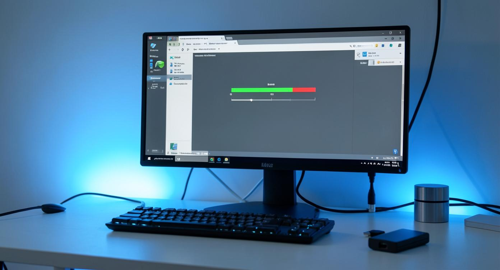

कंप्यूटर को फॉर्मेट कैसे करें (Windows और Mac)

किसी भी कंप्यूटर को फॉर्मेट कैसे करें (PC, Mac और Chromebook)
कंप्यूटर को फॉर्मेट करने का अर्थ है हार्ड ड्राइव में मौजूद पूरा डेटा मिटाकर ऑपरेटिंग सिस्टम को दोबारा इंस्टॉल करना। यह प्रक्रिया तब उपयोगी होती है जब कंप्यूटर सही से काम नहीं कर रहा हो, बहुत धीमा हो गया हो, वायरस की समस्या हो या कंप्यूटर को बेचने अथवा किसी अन्य को देने से पहले अपना निजी डेटा सुरक्षित रखना हो।
Windows, Mac और Chromebook को जल्दी फॉर्मेट करने के तरीके
Windows 10 / 11: Start → Settings → System → Recovery → Reset this PC
Mac: Apple Menu → System Settings → General → Transfer or Reset → Erase All Content & Settings
Chromebook: Sign out → Ctrl + Alt + Shift + R → Powerwash → Continue
तरीका 1: Windows 10 और Windows 11 को फॉर्मेट करना
स्टेप 1: डेटा का बैकअप लें
फॉर्मेट करने पर सभी ऐप्स, सेटिंग्स और फाइलें हट जाती हैं। जरूरी डेटा को External Hard Disk, Pen Drive, Google Drive या OneDrive में सुरक्षित रखें।
स्टेप 2: Windows Settings खोलें
Start Menu पर क्लिक करें और Settings खोलें। यदि Windows स्टार्ट नहीं हो रहा है, तो Windows Recovery Environment (WinRE) में जाकर Reset this PC चुनें।
स्टेप 3: System या Update & Security चुनें
Windows 11 में System और Windows 10 में Update & Security विकल्प चुनें।
स्टेप 4: Recovery विकल्प खोलें
Recovery सेक्शन में जाकर Reset this PC पर क्लिक करें।
स्टेप 5: Remove everything चुनें
पूरी तरह फॉर्मेट करने के लिए Remove everything विकल्प चुनें।
स्टेप 6: Windows पुनः इंस्टॉल करें
Cloud reinstall या Local reinstall में से कोई एक विकल्प चुनें।
स्टेप 7: Reset पर क्लिक करें
फॉर्मेटिंग शुरू होगी। प्रक्रिया पूरी होने के बाद Windows नया सेटअप दिखाएगा।
तरीका 2: Apple Silicon या T2 Chip वाले Mac को फॉर्मेट करना
स्टेप 1: बैकअप लें
Time Machine या iCloud में सभी जरूरी फाइलों का बैकअप लें।
स्टेप 2: System Settings खोलें
Apple Menu → System Settings → General
स्टेप 3: Erase All Content & Settings चुनें
Administrator Password डालकर आगे बढ़ें।
स्टेप 4: फॉर्मेट की पुष्टि करें
Erase All Content & Settings पर क्लिक करें। Mac रीस्टार्ट होकर नया सेटअप शुरू करेगा।
तरीका 3: Chromebook को फॉर्मेट करना
स्टेप 1: डेटा बैकअप करें
Google Drive में फाइलें सेव करें और अकाउंट Sync रखें।
स्टेप 2: Chromebook से Sign out करें
नीचे दाएं कोने से Sign out करें।
स्टेप 3: Reset Menu खोलें
Ctrl + Alt + Shift + R दबाएं।
स्टेप 4: Powerwash चुनें
Continue पर क्लिक करें। Chromebook पूरी तरह रीसेट हो जाएगा।
तरीका 4: Intel Processor वाले Mac को फॉर्मेट करना
स्टेप 1: Recovery Mode में जाएं
Mac को रीस्टार्ट करें और Command + R दबाकर रखें।
स्टेप 2: Disk Utility खोलें
macOS Utilities से Disk Utility चुनें।
स्टेप 3: ड्राइव Erase करें
Format: APFS और Scheme: GUID Partition Map चुनें।
स्टेप 4: macOS दोबारा इंस्टॉल करें
Disk Utility बंद करके Reinstall macOS चुनें।
तरीका 5: Windows 8.1 को फॉर्मेट करना
स्टेप 1: बैकअप लें
सभी जरूरी फाइलें सुरक्षित करें।
स्टेप 2: PC Settings खोलें
Settings → Change PC Settings → Update and Recovery → Recovery
स्टेप 3: Remove everything चुनें
Fully clean the drive विकल्प चुनकर Reset करें।
Community Q&A (सामान्य प्रश्न और उत्तर)
प्रश्न: कंप्यूटर को फॉर्मेट करने की जरूरत क्यों पड़ती है?
कंप्यूटर को फॉर्मेट करने से सिस्टम पूरी तरह साफ हो जाता है। यदि आप अपना कंप्यूटर बेचने वाले हैं, किसी और को देने वाले हैं, या सिस्टम बहुत स्लो हो गया है, बार-बार एरर आ रहे हैं या वायरस की समस्या है, तो फॉर्मेट करना सबसे अच्छा समाधान होता है।
प्रश्न: यदि मैं अपना पासवर्ड भूल जाऊं तो क्या कर सकता हूं?
यदि आप Windows पासवर्ड भूल गए हैं, तो आप पासवर्ड रीसेट डिस्क की मदद से पासवर्ड हटा सकते हैं। इसके अलावा, सिस्टम को फॉर्मेट करके नया अकाउंट भी बनाया जा सकता है।
प्रश्न: Windows 10 को फॉर्मेट कैसे करें?
Settings में जाकर Update & Security चुनें। इसके बाद Recovery पर क्लिक करें और Reset this PC के नीचे Get Started विकल्प चुनें। यहां आप अपनी जरूरत के अनुसार Keep my files या Remove everything चुन सकते हैं।
महत्वपूर्ण टिप्स (Tips)
- फॉर्मेट करने से पहले हमेशा जरूरी डेटा का बैकअप जरूर लें।
- लैपटॉप को फॉर्मेट करते समय चार्जर अवश्य लगाएं।
- यदि कंप्यूटर बेचना है, तो Remove everything और Fully clean the drive विकल्प चुनें।
- फॉर्मेट के बाद Windows या macOS को अपडेट करना न भूलें।
- एंटीवायरस और जरूरी ड्राइवर दोबारा इंस्टॉल करें।
फॉर्मेटिंग के बाद क्या करें
कंप्यूटर फॉर्मेट होने के बाद सबसे पहले ऑपरेटिंग सिस्टम का सेटअप पूरा करें। इसके बाद जरूरी ड्राइवर, सिक्योरिटी अपडेट और आवश्यक सॉफ्टवेयर इंस्टॉल करें। अंत में, पहले लिए गए बैकअप से अपनी फाइलें वापस कॉपी करें।